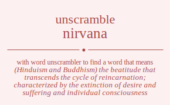

Do you wonder how many words you can made out of letters nirvana. To unscramble nirvana we can search against each letter in nirvana and find meaningful words in dictionary. You can use this word list to cheat word games. Unscramble word cheat is one of the things you can do by using our site.
The word found after unscrambling nirvana means that
(Hinduism and Buddhism) the beatitude that transcends the cycle of reincarnation; characterized by the extinction of desire and suffering and individual consciousness,
any place of complete bliss and delight and peace,
.
